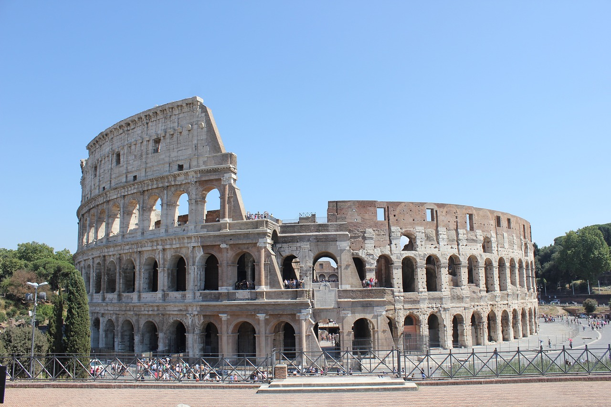
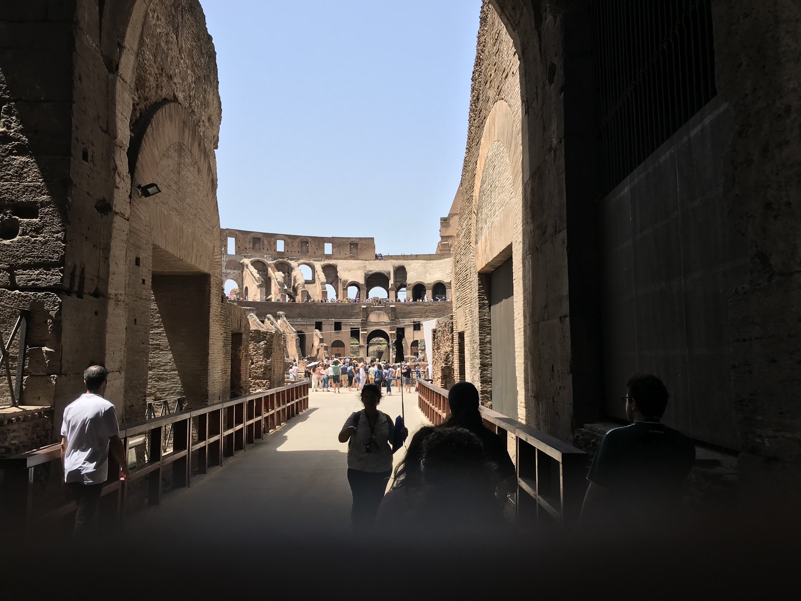
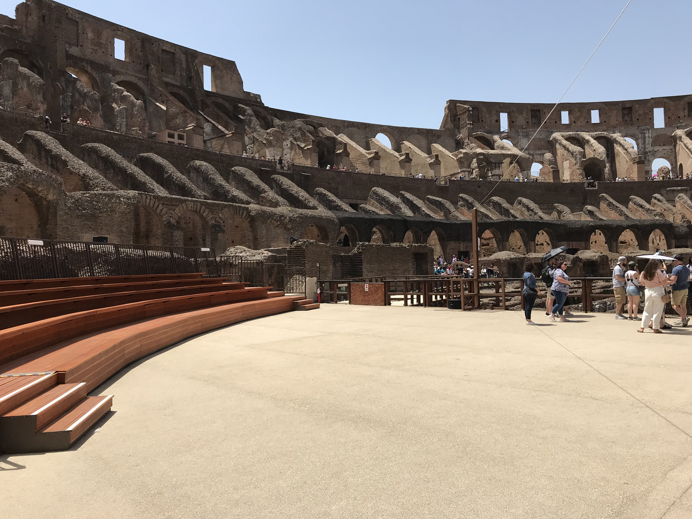
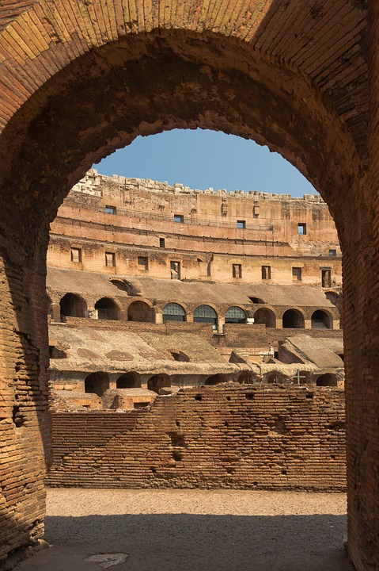
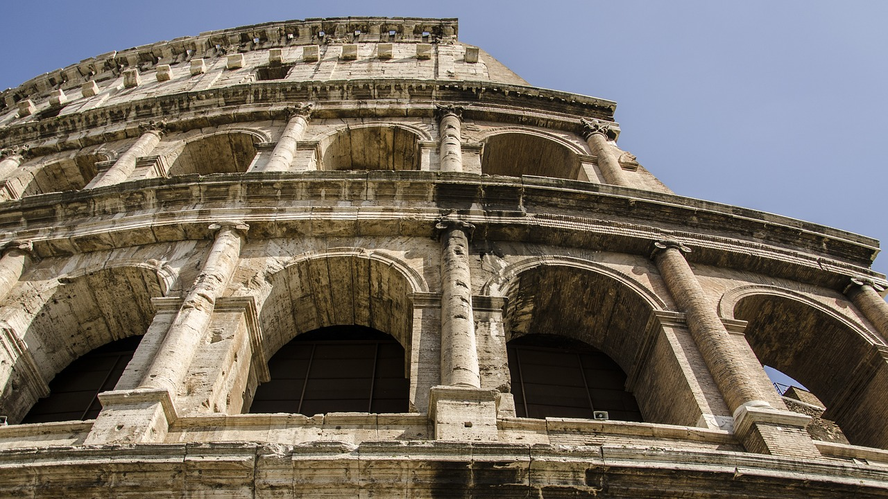

The colosseum has always been something I've wanted to see. I love to think about the history of it. I can't help but to think about the people who would come to watch the games.
I would think of the gladiators who would fight to the death against other gladiators or wild animals. To Think this was going on thousands of years ago on the very ground I was standing was so interesting to me. I finally got a chance to see it just before COVID.

The outside of the colosseum.

This is the entrance the gladiators would use to enter the colosseum.The inside of the Colsseum is currently being restored.

A new viewing area for tour groups.This is a view of the corridors and holding areas for the animals under the arena.An interesting fact that I was unaware was that they would frequently flood the arena and stage mock sea battles.I learned on our tour that until the restoration started people were taking pieces of the colosseum to their homes.

They say that the average number of attendees was 65,000.

The exterior is still in amazing condition considering it's 2,000 years old.